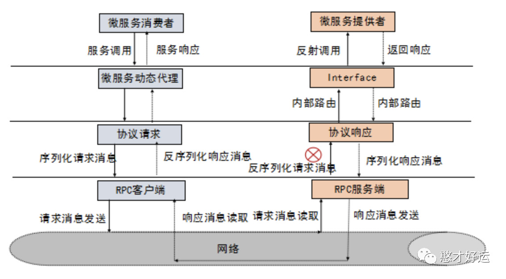

RPC定义
RPC 框架的目标就是让远程服务调用更加简单、透明，RPC 框架负责屏蔽底层的传输方式（TCP 或者 UDP）、序列化方式（XML/Json/ 二进制）和通信细节。服务调用者可以像调用本地接口一样调用远程的服务提供者，而不需要关心底层通信细节和调用过程。
RPC原理
我们在实现 RPC 框架之前，需要先掌握 RPC 框架的实现原理。在 RPC 框架中，最关键的就是理解“桩”的实现原理，桩是 RPC 框架在客户端的服务代理，它和远程服务具有相同的方法签名，或者说是实现了相同的接口。客户端在调用 RPC 框架提供的服务时，实际调用的就是“桩”提供的方法，在桩的实现方法中，它会发请求的服务名和参数到服务端，服务端的 RPC 框架收到请求后，解析出服务名和参数后，调用在 RPC 框架中注册的“真正的服务提供者”，然后将结果返回给客户端。
动手实现一个RPC框架
在京东资深架构师李玥的消息队列高手课中实现了一个“麻雀虽小但五脏俱全”的RPC框架。他把这个 RPC 框架的实现代码以及如何使用这个 RPC 框架的例子，放在了 GitHub 的simple-rpc-framework项目中。整个项目分为如下 5 个 Module：
其中，RPC 框架提供的服务 RpcAccessPoint 和注册中心服务 NameService，这两个接口的定义在 Module rpc-api 中。使用框架的例子，HelloService 接口定义在 Module hello-service-api 中，例子中的客户端和服务端分别在 client 和 server 这两个 Module 中。最重要的是用了四节课详细讲解了这个RPC框架的实现方式，非常值得学习和研读。
在学习完这个RPC框架的原理和源码的过程中，李老师还分别提出了四个问题供课下思考和实现，分别是：
从 GitHub 上把我们即将实现的 RPC 框架的源代码下载到本地，先分别运行一下例子中的服务端和客户端，对整个项目有一个感性的认识。然后再分别看一下 rpc-api、hello-service-api、server 和 client 这四个 Module 的源代码，理清楚 RPC 框架的功能，以及如何使用这个 RPC 框架；
来做一个序列化的替换实现。我们这个例子中，使用了自己实现的专有的序列化实现，这些实现类都放在了 com.github.liyue2008.rpc.serialize.impl 这个包中，你需要换一种序列化的实现方式，来替换掉我们这个序列化实现。具体实现可以使用 JSON、Protobuf 或者任何一种序列化方式；
扩展一下我们现在这个 RPC 框架客户端，解除“服务接口只能有一个方法，并且这个方法只能有一个参数，参数和返回值的类型都是 String 类型”这个限制，让我们的这个 RPC 框架真正能支持任意接口；
实现一个 JDBC 协议的注册中心，并加入到我们的 RPC 框架中。加入后，我们的注册中心就可以使用一个支持 JDBC 协议的数据库（比如 MySQL）作为注册中心的服务端，实现跨服务器的服务注册和查询；
本文在学习完李老师的RPC框架之后，结合网上的分享，总结汇总了四道题题目的实现范例，四个分支分别对应上述四道问题，代码放在参考链接中。
参考链接
李玥老师的github项目simple-rpc-framework的链接
关注【憨才好运】微信公众号，了解更多精彩内容⬇️⬇️⬇️